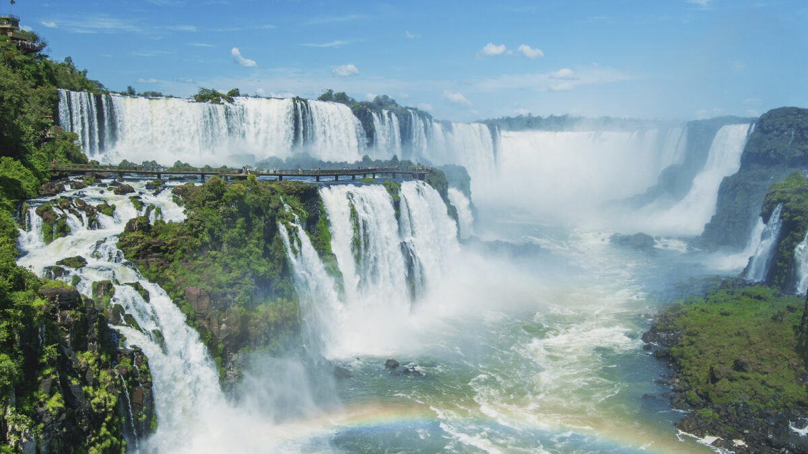

About Me
I'm Sabrina, I'm 26 years old, I came from Brazil. Canada is the first country I visit, I never left Brazil. I love my country for the cultural diversity it offers, for the typical foods and regional musical styles. I like to say that Brazil has beautiful natural places to visit like Iguazu Falls and Lençóis Maranhenses. I chose Canada for the culture and for a new experience in my life, I believe that the Interactive Media Design program can offer me new perspectives and experiences in the professional field.
I have a degree in Psychology since 2019, I have worked in the area since I graduated, specifically with HOD e training and development. I got married recently, actually since July 10th2022, I met my husband during an academic research in the Psychology course, since we met we had the dream of coming to live in Canada. My dream is to visit the Canadian Rocky Mountains.

- I like to read some books about self development.
- Watch Youtube videos about travel and games.
- Play with my pet.
- Walking with my husband to admire the nature.
- Talk with my mom and dad when I miss them.
"For those who are determined to fly, not having wings is just a detail."- Guilherme Ávila